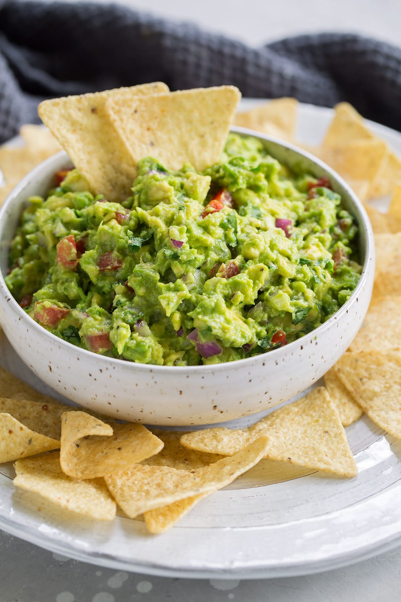

Holy Guacamole!

What is Guacamole?
Guacamole is an avocado-based dip or spread that originated in Mexico. It's typically made with mashed avocado and lime juice, then seasoned with salt and cilantro. Guacamole often contains tomatoes and onions.
Ingredients:
- 3 avocados - peeled, pitted and mashed
- 1 lime, juiced
- 1 tsp salt
- 2 roma (plum) tomatoes, diced
- 1/2 cup diced onion
- 3 tbsp choopped fresh cilantro
- 1 tsp minced garlic
- 1 pinch ground cayenne pepper (optional)
Instructions
- Mash avocados, lime juice and salt together in a medium bowl; mix in tomatoes, onion cilantro, and garlic. Stir cayenne pepper.
- Serve immediately, or cover and refrigerate for 1 hour for improved flavor.